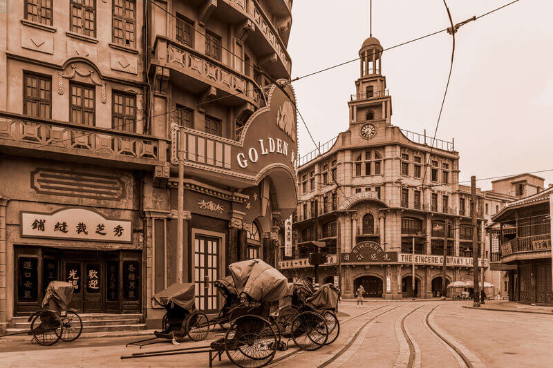
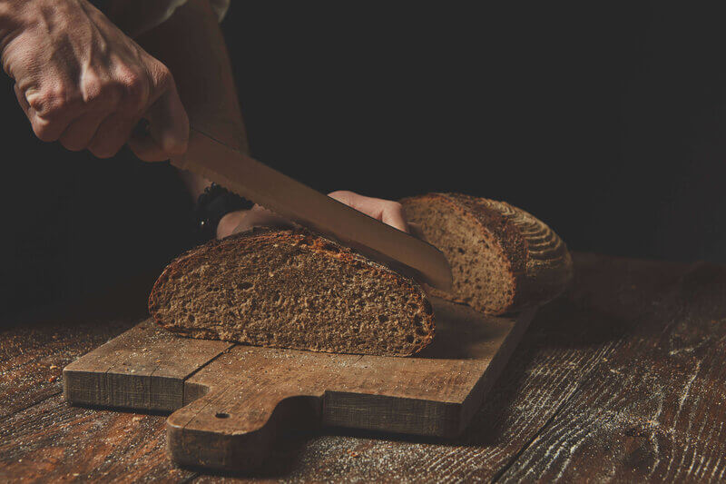

Our story
Please find ourt story in few images below.
This page is to show responsiveness with css only (no javascript is being used).
Please be advised that number of breakpoints has been set only to show idea of responsiveness.
Beggining
Our history begins in late XIX century, when local mill owner has decided to open a bakery.
First bakery and shop were located in a strict city center, just beside a Town Hall.
Image by 4045 on Freepik


No compromises
Since this day our family feels responsible for making real food.
There is no room for any artifical igredients.
Our bread and pastries are made with fresh, locally sourced water, yast and flour from own mill.
Image by Yaroslav Danylchenko on Freepik